Verdict
The Godot port is far from "barebones" — it is a mature, playable reimplementation. The full Town 1→2→3 vertical slice runs end-to-end, the chain/collapse/refill mechanic is faithful, the mine and harbor boards render their tile art well, and the long-tail screens (achievements, quests, chronicle, charter, castle, daily, decorations, portal) are near pixel-parity with React. The logic backbone is healthy (headless suites green).
P0 blocks the experience P1 major visible gap P2 minor / polish P3 parked / by-design parity matches React
Parity scorecard
Each row is a live side-by-side comparison. "Severity" is the worst gap on that screen.
| Surface | Godot state | Severity | One-line gap |
|---|---|---|---|
| Puzzle board (farm) | Playable, faithful mechanic | P1 | Stockpile is a thin bottom strip; season strip is tiny; tile variety thinner. |
| Mine / Harbor boards | Render with correct tile art | parity | Good — ore/coal/gem and fish/shell/pearl all render. |
| Town map | Spatial map + build flow | P1 | Every building is an identical labelled placeholder house; no townsfolk. |
| Craft screen | Town-management list | P1 | No station tabs / recipe grid / recipe detail; only 2 recipes. |
| Tile collection | Flat gallery (all 79) | P1 | No category tabs, no detail panel, no tile-ability "Activate". |
| Townsfolk / Workers | NPC bond roster | P1 | "Workers" tab shows bonds, not the worker-hiring system. |
| Run summary | 1-line harvest modal | P1 | Missing the rich end-of-run stats dashboard. |
| Inventory | Tabbed + grouped + sell values | P2 | Missing "Items" tab and grid/list toggle. |
| Game menu | Sound + New Game + "More" | P2 | No Settings submenu, About, Game Wiki, Show Tutorial, Fullscreen. |
| Tutorial | 6-step modal | P2 | No NPC avatar, no page-dot indicator (text "Step 1/6"). |
| Start-farming modal | Tile chooser + cost | parity | Faithful port. |
| Quests / Almanac | Tabbed quest + XP track | parity | Functionally equivalent. |
| Achievements | 2-col grid + Collection tab | parity | Strong parity (19 vs 27 trophies). |
| Chronicle / Charter / Castle | Faithful ports | parity | Timeline rail, term pills, contribution bars all present. |
| Cartography | 3-node functional map | P3 | React's illustrated multi-zone world map is parked. |
| Boons | Absent | P3 | Keeper-perk upgrade system not ported (dropped). |
Puzzle board P1
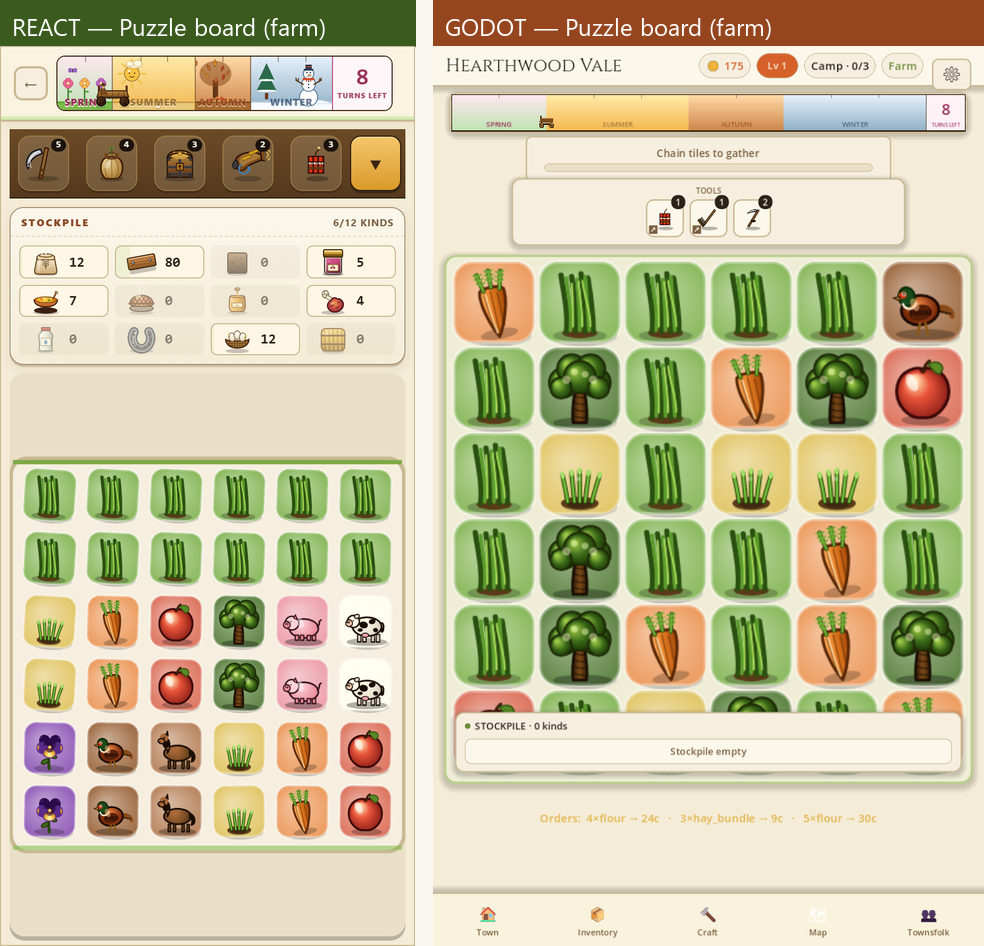
- Chain mechanic, 8-way adjacency, collapse/refill and animated juice are all present and feel right.
- Stockpile placement & prominence. React shows a rich STOCKPILE panel near the top (below the tools, above the board) with a grid of resource chips and "6/12 KINDS". Godot relegates it to a thin one-line strip at the very bottom that reads "Stockpile · 0 kinds / empty" for most of a run — the player can't see what they're gathering at a glance.
- Season strip is under-built. React's board header is a prominent 4-season strip (spring/summer/autumn/winter icons) with the current season highlighted and a bold "8 TURNS LEFT" pill. Godot shows a much thinner season bar and leans on the top-bar town pills instead.
- Tile variety & density is thinner on the Godot farm board (more grass/tree-heavy, slightly smaller cells with wider cream gutters). React's board reads more colourful and full-bleed.
- Top bar differs in intent: React's board chrome is gameplay-first (season + turns); Godot keeps the persistent town top-bar (town name + coins + tier pill) on the board too.
Mine & Harbor boards parity
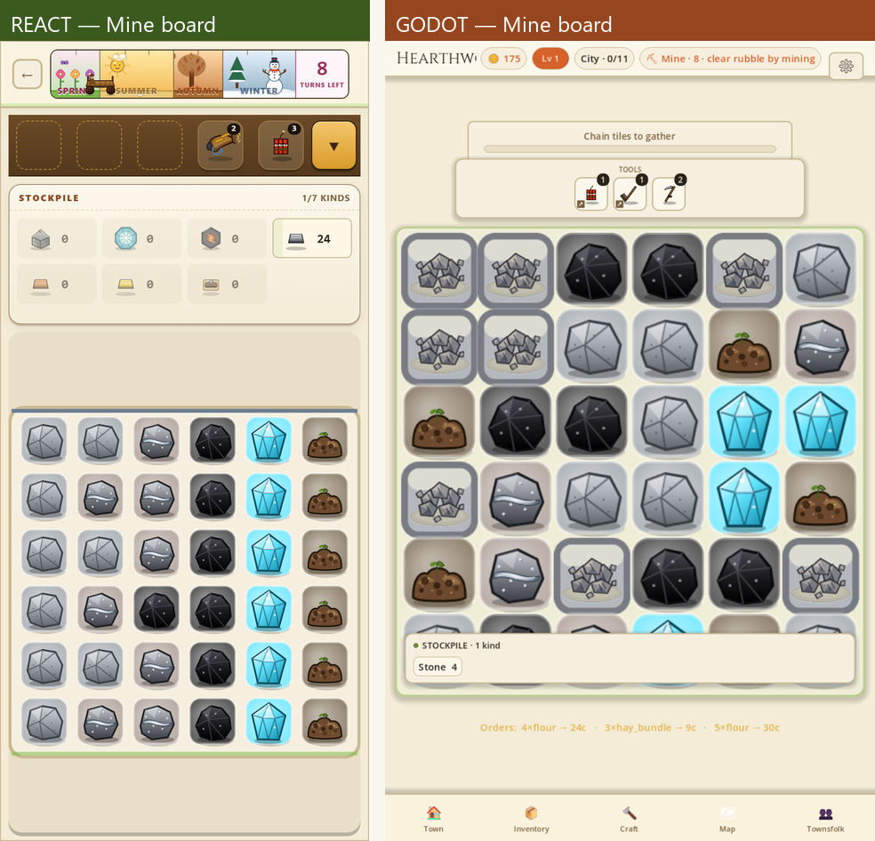
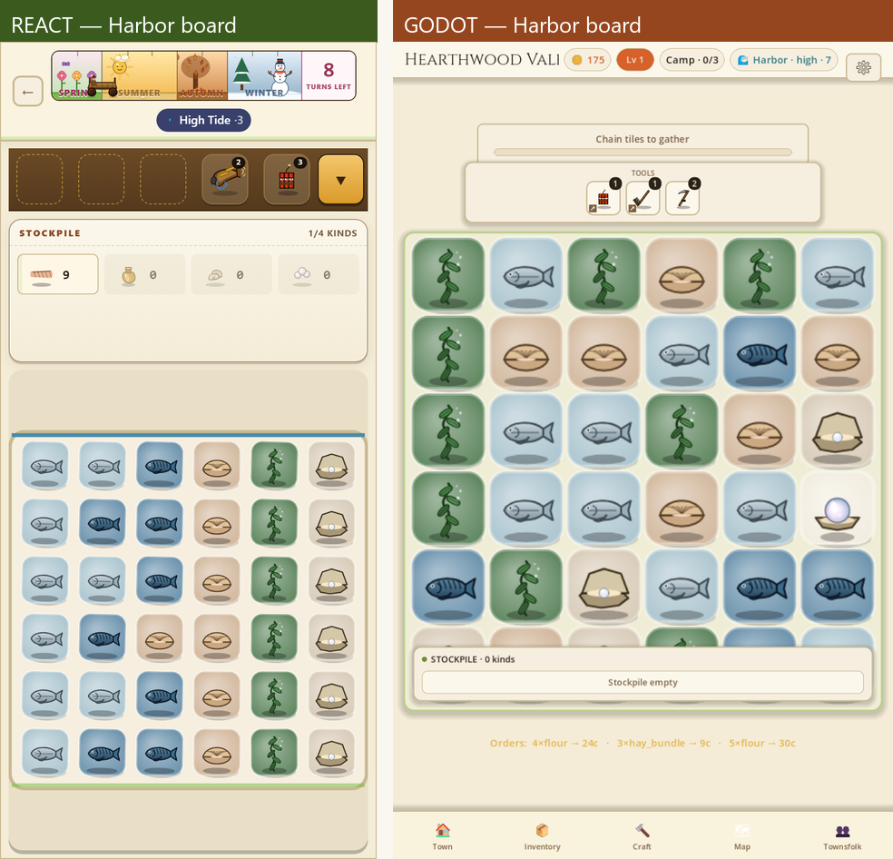
- Mine tiles (grey ore, black coal, blue gems) render distinctly and match React closely.
- Harbor tiles (fish, shells, sand, giant pearl) render with the blue tide tint; the "high/low tide" indicator is present.
- Same board-page caveats as the farm board apply (stockpile at bottom, thinner season strip).
Town map P1
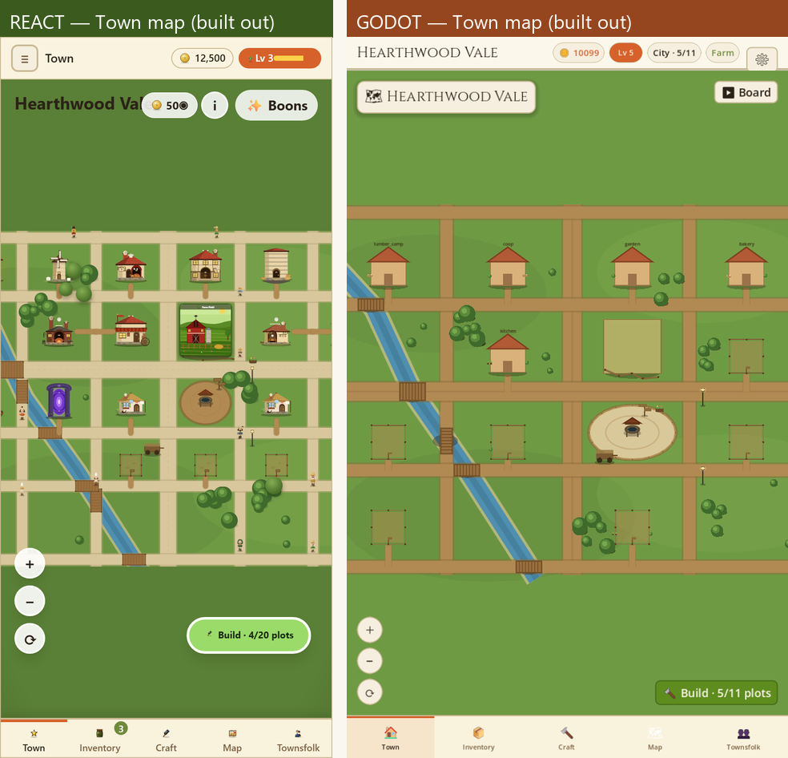
- The spatial layout itself is a faithful port — same lot grid, river, bridges, lampposts, central well, scattered trees, pan/zoom controls, and the "Build · N/M plots" CTA.
- Buildings have no distinct art. React renders each building type as a unique illustrated structure — a windmill, a red barn (the farm field), a forge/smithy, a glowing purple portal, and several varied cottages/manors/silos. Godot draws every built plot as the same generic tan box with a small red roof, disambiguated only by a tiny text label ("lumber_camp", "coop", "garden", "bakery", "kitchen"). This is the single biggest "looks unfinished" signal in the port.
- No townsfolk. React animates little villager figures walking the streets between plots; the Godot town is empty.
- React's town header carries a "✨ Boons" button and a zone-spawn "i" info pill ("Zone spawn rates and modifiers"); Godot has neither (boons is dropped; zone info is unsurfaced).
src/iso/, 27 procedural SVG buildings) so each building_id maps to its own sprite would, on its own, move the port's perceived polish more than any other single change.Craft screen P1
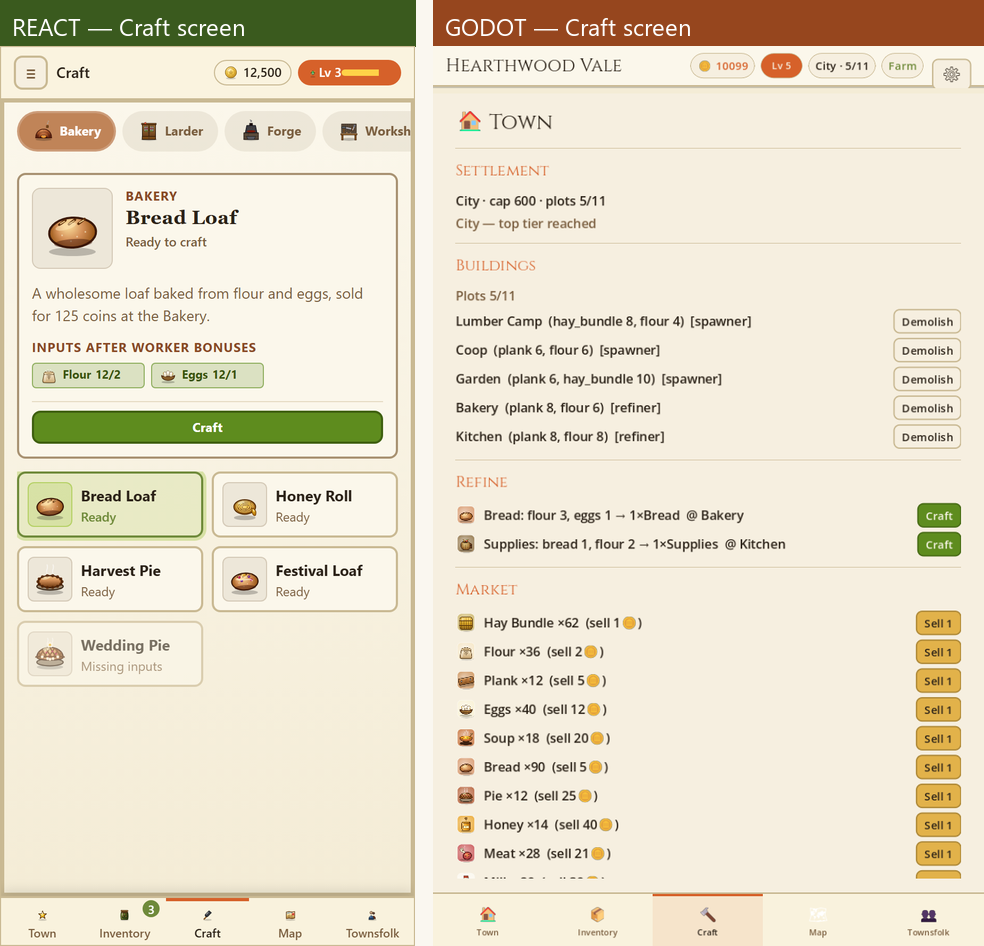
- Wrong screen, essentially. React's "Craft" tab is a dedicated crafting interface: station tabs (Bakery / Larder / Forge / Workshop), a recipe grid (Bread Loaf, Honey Roll, Harvest Pie, Festival Loaf, Wedding Pie…), and a rich detail card with the recipe description, input chips ("Flour 12/2, Eggs 12/1"), a worker-bonus line, and a green Craft button.
- Godot's "Craft" tab is instead a town-management ledger — Settlement info, a Buildings list with Demolish buttons, a 2-row Refine section, and a long Market sell/buy list. Useful, but it is not the crafting experience and mixes four concerns into one scroll.
- Only 2 recipes (Bread, Supplies) versus React's multi-station catalog. No recipe descriptions, no recipe cards, no station tabs.
- Market buy does exist (a "— Buy —" section below the sell fold) — it's just buried.
Inventory P2
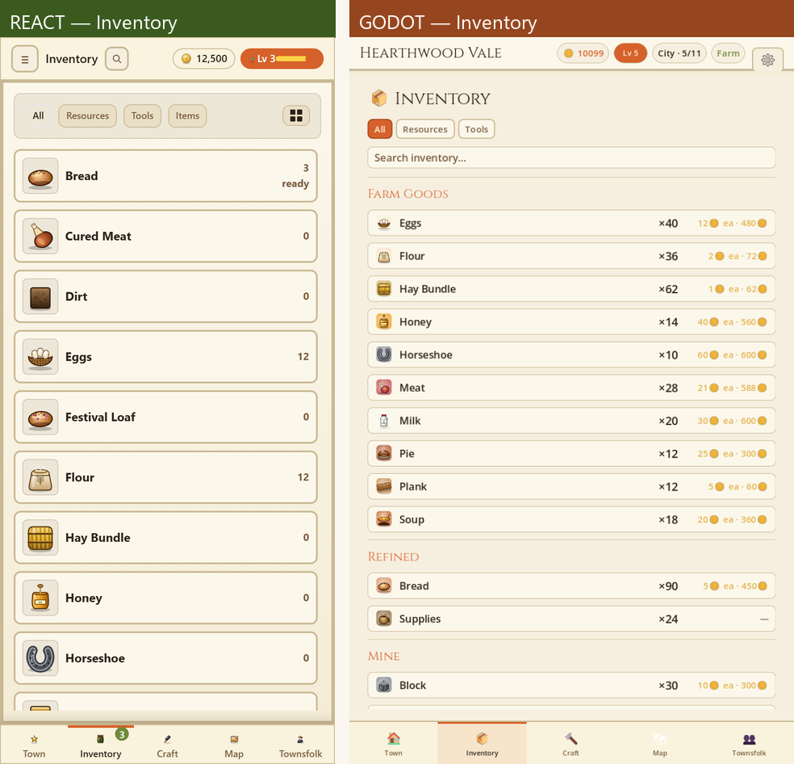
- Godot's inventory is arguably richer in places: it groups items by category (Farm Goods / Refined / Mine), shows per-item sell value ("12🪙 ea · 480🪙"), and has a working search field.
- Missing the "Items" tab (React has All / Resources / Tools / Items; Godot has All / Resources / Tools).
- Missing the grid/list view toggle (the ⊞ button in React's header).
- React item icons are larger and framed; Godot's are smaller. Minor.
Start-farming & lifecycle parity
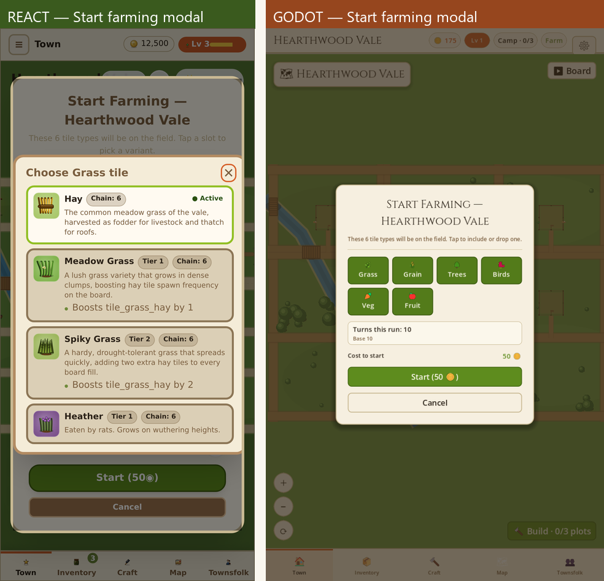
- Faithful port: the 6-tile-type chooser, "Turns this run: 10", "Cost to start: 50🪙", and Start/Cancel all match.
- Entry point differs slightly: React taps the farm-field building on the map ("Enter Farm Field"); Godot taps a farm board-pad / "▶ Board" button. Both open the same modal.
End-of-run summary P1
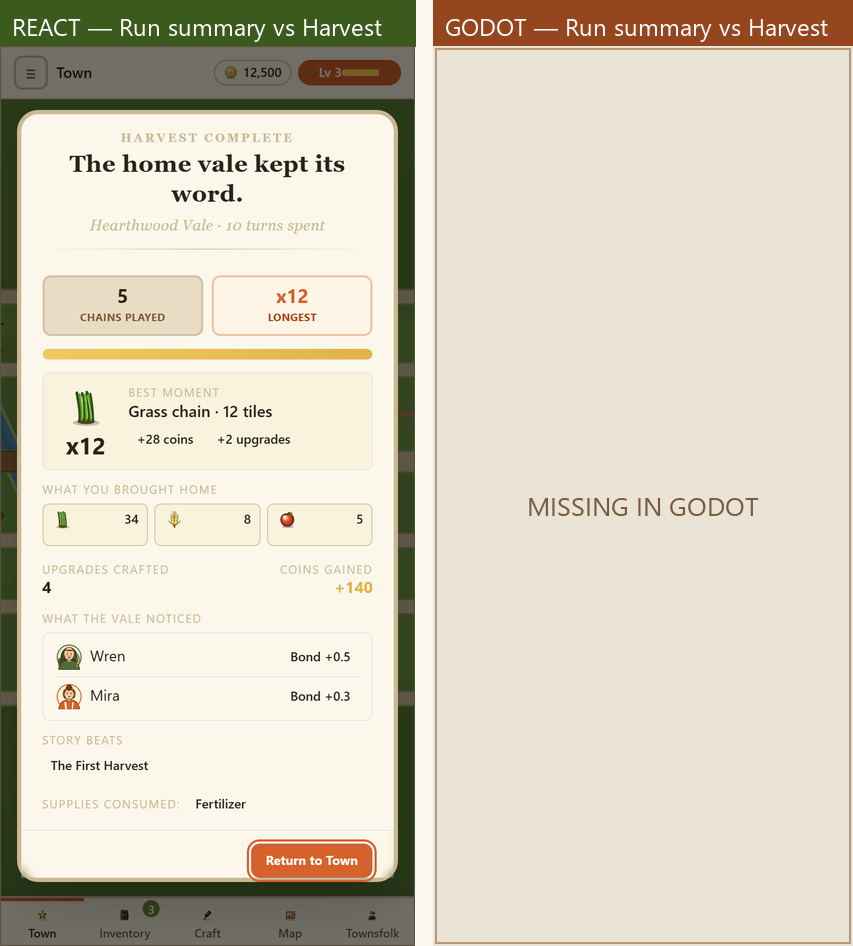
- React closes a run with a rich recap: chains played, longest chain, "best moment" callout, what-you-brought-home item tallies, upgrades crafted, coins gained, which NPCs noticed you (bond deltas), story beats fired, and supplies consumed.
- Godot shows a single-line modal ("A full year of 10 turns is in. Your stores: 184 coins. +25🪙 return bonus. Return to Town.") — correct, but it throws away the satisfying payoff screen.
- The lifecycle plumbing is sound (the harvest modal fires at the right time and routes back to town); only the content is thin.
Tile collection P1
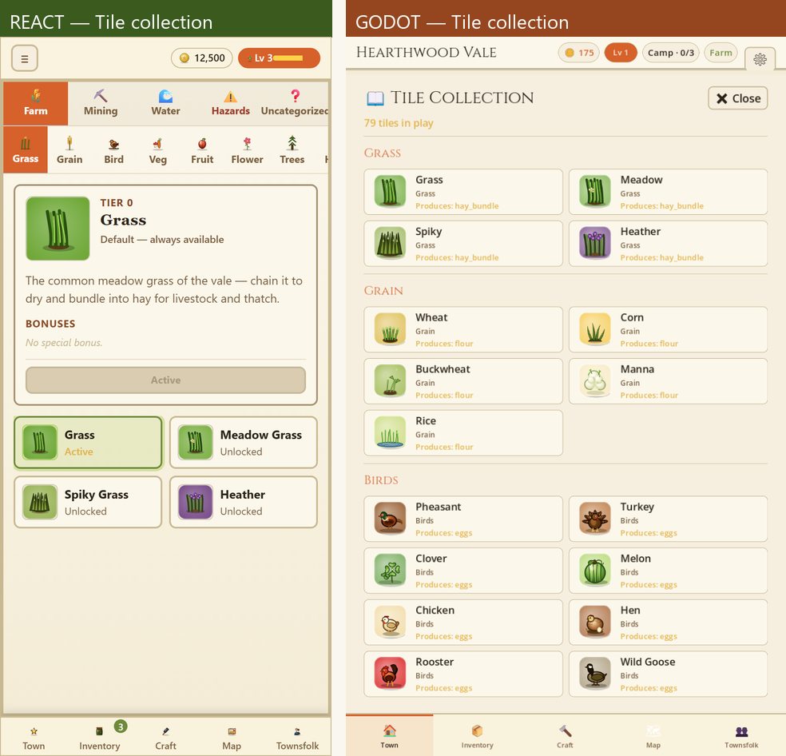
- Godot lists all 79 tiles grouped by category with art, name and produced resource — honest and complete coverage.
- No category tabs (React: Farm / Mining / Water / Hazards / Uncategorized) and no sub-category tabs (Grass / Grain / Bird / Veg / Fruit / Flower / Trees).
- No per-tile detail panel — React shows tier, a flavour description, and a "Bonuses" block per tile.
- No tile-ability "Activate" system. React tiles carry abilities (e.g. Spiky Grass, Turkey → "2 free moves per season") that the player activates from this screen. Godot's screen explicitly notes the discovery/ability economy is not ported.
Townsfolk & Workers P1
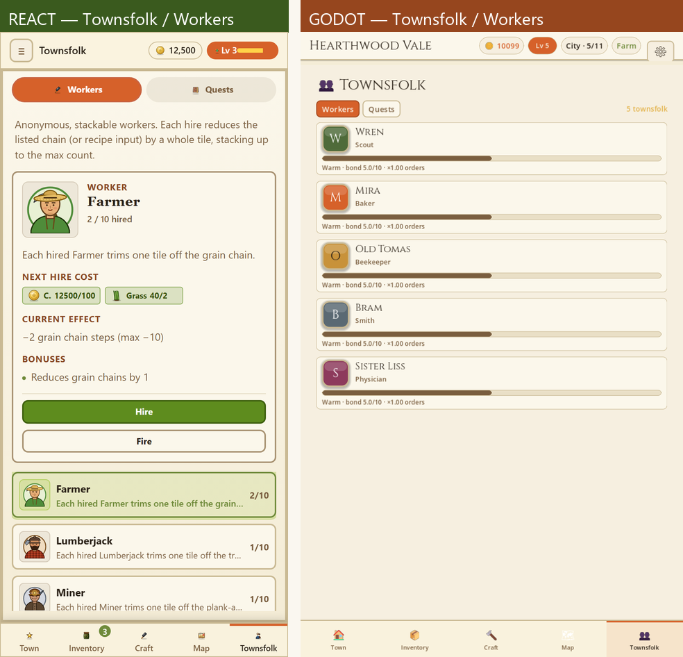
- The "Workers" tab shows the wrong thing. In React, "Workers" is the worker-hiring system — hire a Farmer / Lumberjack / Miner / Baker, each with a card showing next-hire cost, current effect ("−2 grain chain steps"), and bonuses, plus Hire/Fire buttons. In Godot, the "Workers" tab shows the 5-NPC bond roster (Wren/Scout, Mira/Baker, … with "bond 5.0/10 ×1.00 orders").
- The worker-hire system does exist in the port, but it's buried in the Craft/Town list, not on this tab — so the tab label and content are mismatched versus React.
- The NPC bond roster itself is nicely built (coloured avatars, role, tier-tinted bond bars) — it just needs its own tab/home.
- React's Townsfolk hub also folds in Bosses and Castle sub-tabs; Godot reaches those as separate menu screens.
Quests & Almanac parity
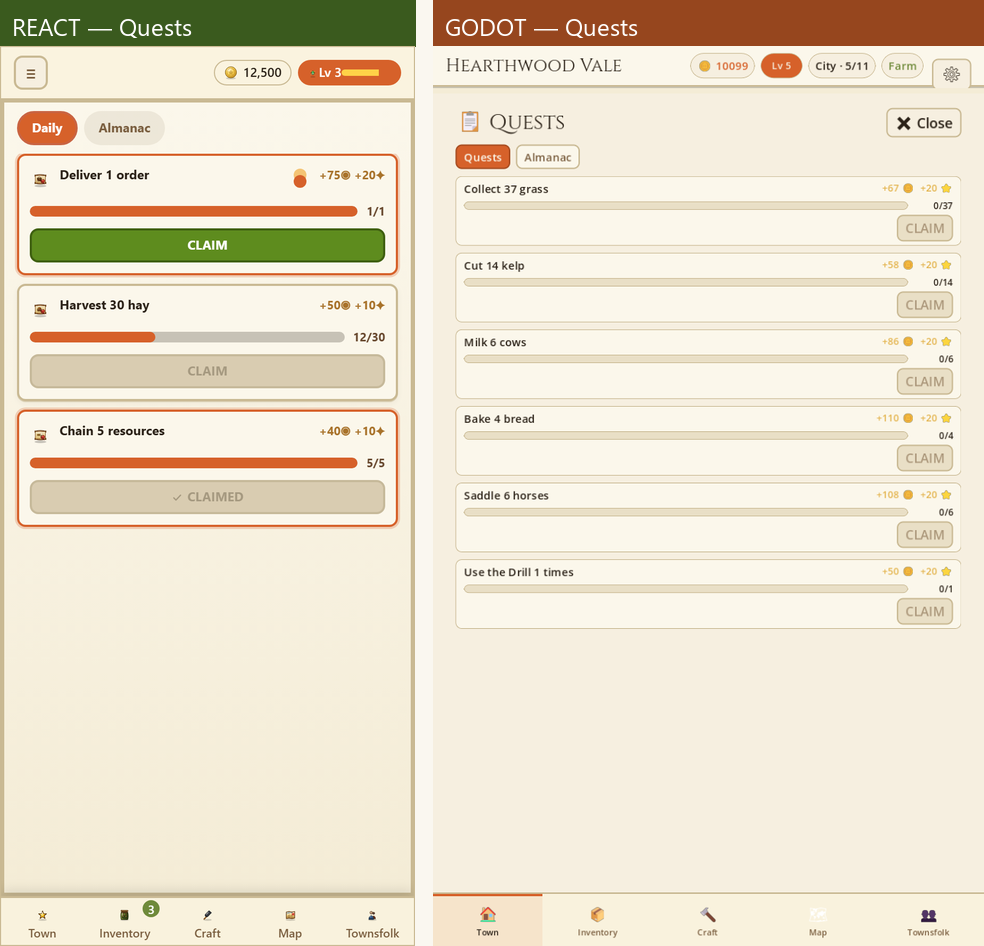
- Both have Quests/Almanac tabs, progress bars, coin + XP rewards, and gated Claim buttons. Functionally equivalent.
- React's quest cards are larger and carry an item icon + a bigger green Claim; Godot's rows are more compact and icon-less. Cosmetic.
Achievements parity
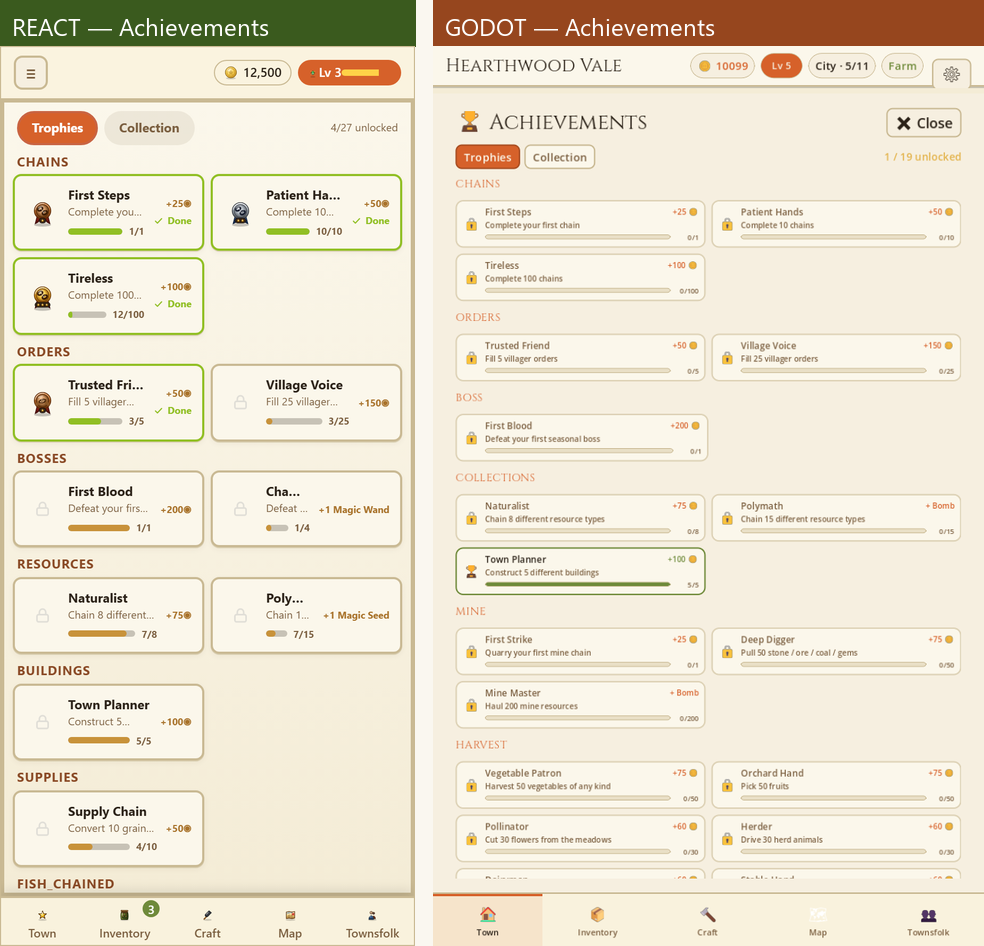
- Strong parity: Trophies/Collection tabs, 2-column card grid, category groups, progress bars, unlocked/locked states.
- Godot exposes 19 port-reachable trophies vs React's 27 (the extras depend on unported systems). Expected.
Chronicle · Charter · Castle parity
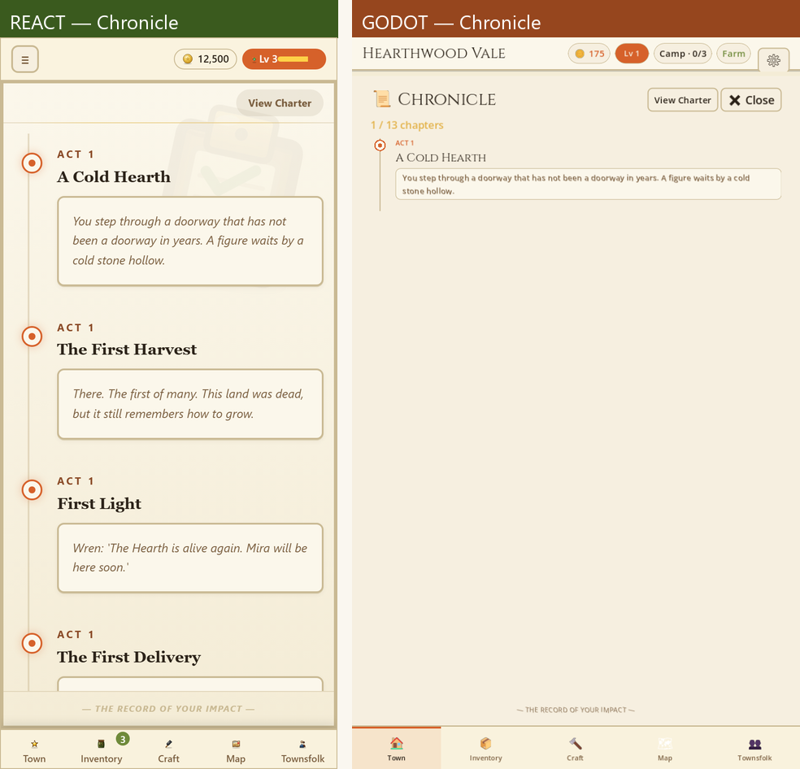
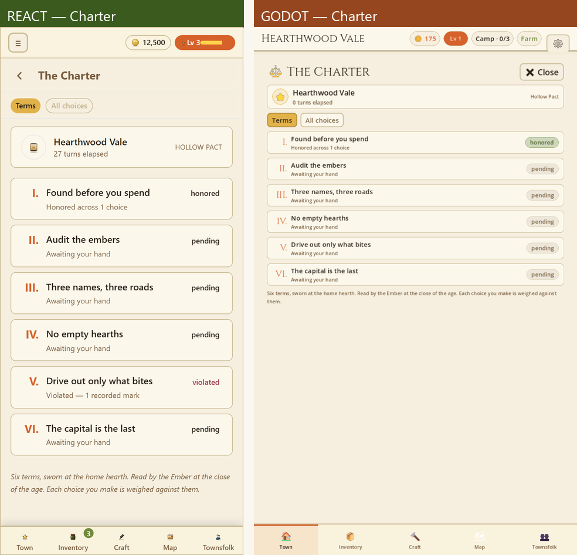
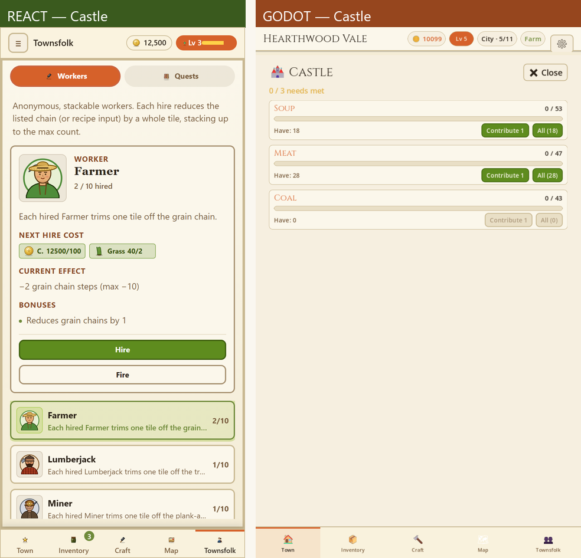
- Chronicle: the Act-grouped timeline rail with beat cards + quotes is a faithful port.
- Charter: the six Hollow-Pact terms with honored/pending/violated pills and the Terms/All-choices toggle match React closely.
- Castle: the per-need contribution bars with Contribute 1 / All(N) are present and correct.
Portal & Decorations parity
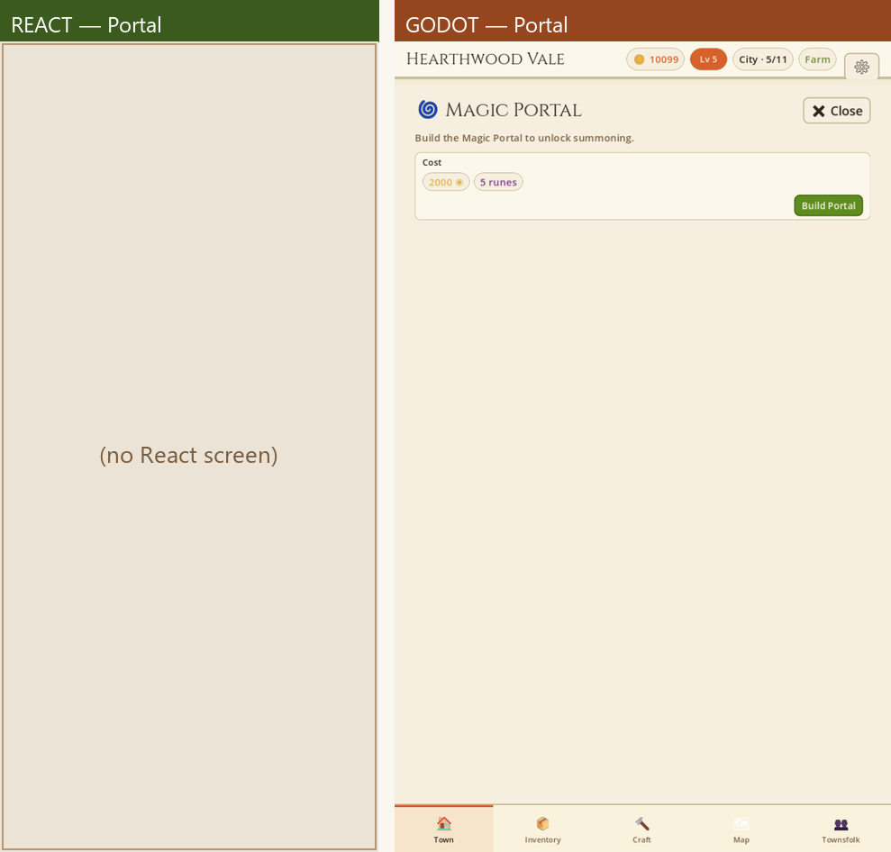
- Portal build gate (2000🪙 + 5 runes → "Build Portal") and the summon economy are ported; Decorations (cost chips + influence grants + built counts) likewise.
- The magic-tool effects from summoning route through the tool-power system and are only partially wired — a known M8 follow-up, not a UI gap.
Cartography / World map P3
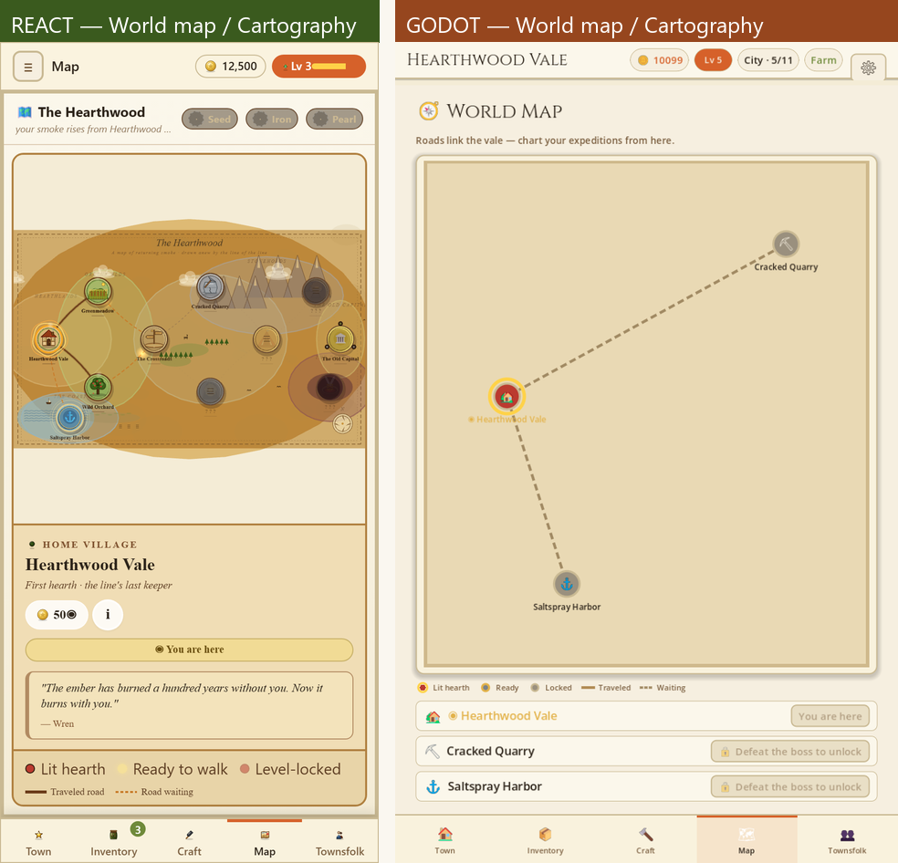
- React renders a rich, illustrated parchment world map ("The Hearthwood") with many clustered zone nodes, a legend, and a per-zone detail panel with lore and a flavour quote.
- Godot renders a clean but minimal 3-node map (Hearthwood Vale · Cracked Quarry · Saltspray Harbor) with dashed roads, a legend, and a travel list ("Defeat the boss to unlock").
- Functionally the travel/expedition gating works. The richer map + extra zones are the parked multi-settlement content — flagged as P3, not a regression.
Tutorial P2
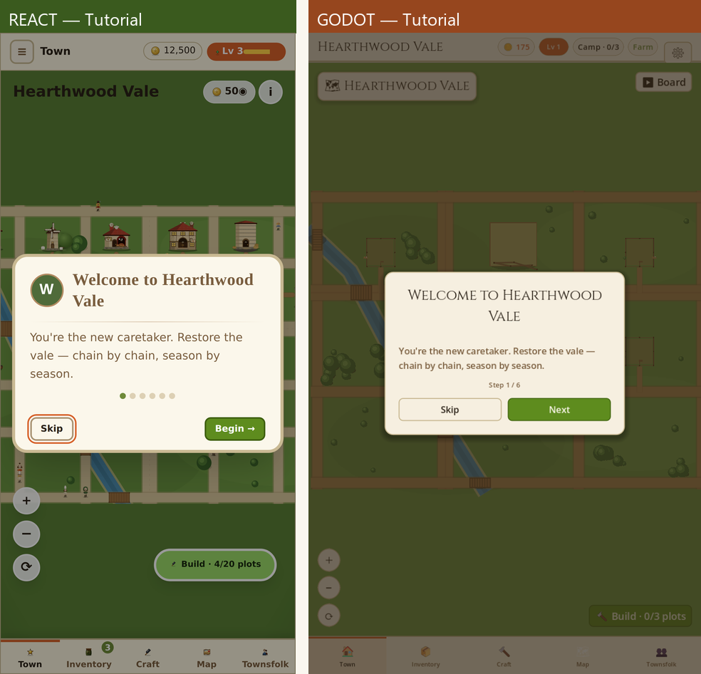
- Same copy, same 6-step flow, Skip / Next, scrim + parchment card.
- Missing the NPC avatar (React shows Wren's portrait) and the page-dot indicator (Godot uses plain "Step 1/6" text).
Boons P3
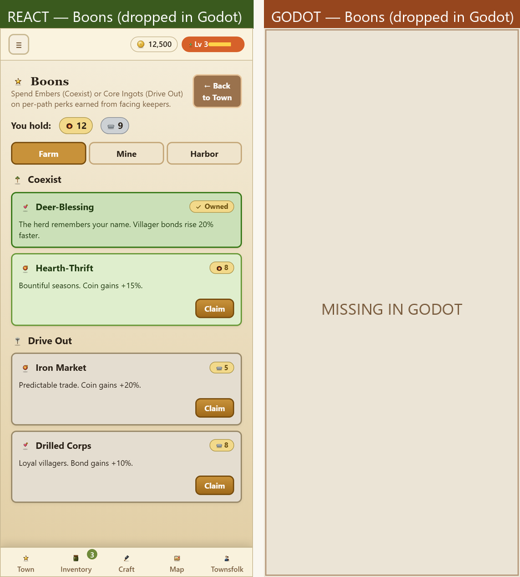
- React has a full keeper-perk economy: spend Embers (Coexist path) or Core Ingots (Drive Out path) on permanent per-biome boons (Deer-Blessing, Hearth-Thrift, Iron Market, Drilled Corps…), reached from a "✨ Boons" button on the town map.
- Godot ships none of it — no Boons button, no screen, no ember/ingot currencies. Documented as an intentional drop (the keeper economy is unported); listed P3 so the team can confirm it stays dropped or schedule it.
Fix tasks
Actionable work items to close the gaps above, ordered by priority. Filter by priority; each task names the Godot file(s) to touch.
P0 blocker P1 major visible gap P2 minor / polish P3 parked — confirm scope first
| # | Pri | Task | Where |
|---|---|---|---|
| 1 | P1 | Distinct town-building art. Port the React iso-building set (src/iso/, 27 SVG buildings) to Godot textures and map each building_id → its own sprite on the town map, replacing the placeholder house. | scenes/town/TownMap.gd, new assets/buildings/ |
| 2 | P1 | Walking townsfolk on the town map. Add ambient villager figures wandering the lots (React parity). | scenes/town/TownMap.gd |
| 3 | P1 | Rebuild the Craft screen as a crafting UI. Station tabs (Bakery/Larder/Forge/Workshop), a recipe grid, and a recipe detail card (description, input chips, worker-bonus line, Craft button). Mirror crafting-bakery. | scenes/RecipeWikiScreen.gd / new CraftScreen.gd |
| 4 | P1 | Split town-management out of "Craft". Move Settlement / Buildings / Demolish / Market into their own surface(s) so Craft is crafting-only. | scenes/TownScreen.gd |
| 5 | P1 | Expand the recipe catalog. Port more RECIPES from React (Honey Roll, Harvest Pie, Festival Loaf, Wedding Pie, forge/larder recipes) so stations aren't near-empty. | scripts/RecipeConfig.gd |
| 6 | P1 | Promote the board stockpile. Move it to a prominent panel above the board with a resource-chip grid and "N/M KINDS"; show run-collected resources live. | scenes/Hud.gd |
| 7 | P1 | Tile-collection tabs + detail panel. Add category tabs (Farm/Mining/Water/Hazards) and sub-category tabs, plus a per-tile detail panel (tier, description, bonuses). | scenes/TileCollectionScreen.gd |
| 8 | P1 | Tile abilities / Activate. Decide scope and, if in, port the tile-ability economy (free_moves, etc.) with an Activate control on the tile detail. | scripts/ new tile-ability config + TileCollectionScreen.gd |
| 9 | P1 | Fix the Townsfolk "Workers" tab. Make "Workers" the worker-hiring system (Farmer/Lumberjack/Miner/Baker cards with cost/effect/bonus + Hire/Fire); give the NPC bond roster its own tab. | scenes/TownsfolkScreen.gd, scripts/WorkerConfig.gd |
| 10 | P1 | Rich run-summary modal. Expand the harvest modal into the stats dashboard: chains played, longest chain, best moment, brought-home tallies, upgrades, coins, NPC bond deltas, story beats, supplies consumed. | scenes/HarvestModal.gd, scripts/GameState.gd (run telemetry) |
| 11 | P2 | Prominent season strip on the board. Build a 4-season header strip with the current season highlighted + bold turns-left pill (React parity). | scenes/SeasonBar.gd |
| 12 | P2 | Inventory "Items" tab + grid/list toggle. | scenes/InventoryScreen.gd |
| 13 | P2 | Menu: Settings submenu (group the audio toggle + future options behind a Settings entry). | scenes/MenuScreen.gd |
| 14 | P2 | Menu: Show Tutorial + Go Fullscreen + About entries (Show Tutorial already replayable via deep-link — surface it). | scenes/MenuScreen.gd |
| 15 | P2 | Tutorial polish. Add the NPC (Wren) avatar and a page-dot step indicator. | scenes/TutorialModal.gd |
| 16 | P2 | Zone-spawn info on the board/town. Surface the per-zone spawn rates / modifiers (React's "i" button) so players understand what spawns. | scenes/Hud.gd / TownMapScreen.gd |
| 17 | P2 | Surface Market Buy. The buy section exists but is buried below the sell fold — give it a clear tab/section once Craft is split. | scenes/TownScreen.gd |
| 18 | P2 | Richer farm-tile art feed. Continue the v2 animated tile-art feed so the farm board reads as full/varied as React. | assets/tiles/v2/, scenes/Tile.gd |
| 19 | P2 | Quest cards parity. Add quest item icons + a larger Claim button to match React's card weight. | scenes/QuestsScreen.gd |
| 20 | P3 | Boons system. Confirm dropped, or port the keeper-perk economy (ember/ingot currencies, per-biome boons, "✨ Boons" entry). | new BoonsConfig.gd + screen (scope decision) |
| 21 | P3 | Illustrated world map + more zones. Richer cartography art, zone detail/lore panel, additional nodes — gated on the multi-settlement model. | scenes/CartographyScreen.gd |
| 22 | P3 | Multi-settlement / per-zone inventory. React keys inventory per zone (inventory.home.*); the port flattens to one shared store. Parked refactor. | scripts/GameState.gd |
| 23 | P3 | Remaining hazards. Fire/Wolves (farm) and Gas-Vent/Lava/Mole (mine) overlays + mechanics. | scripts/ hazard configs + Board.gd |
| 24 | P3 | Weather / boss board polish. Boss currently reuses the farm board + an HP pill; add the weather/special-board treatment if desired. | scenes/Board.gd |
| 25 | P3 | Magic-tool effects. Finish wiring summoned magic-tool powers through the tool-power system (M8 follow-up). | scripts/ToolEffects.gd |
| 26 | P3 | Bosses & Castle as Townsfolk sub-tabs. React folds these into the Townsfolk hub; consider matching the IA. | scenes/TownsfolkScreen.gd |
How this review was done
- React (reference): driven live via the Vite dev server + Playwright, using the in-app visual-scenario bridge (
?visual=<id>) to render each screen/state, plus live interaction (entered a farm run, simulated a chain) throughwindow.__hearthVisual. - Godot (port): rendered live with the project's own capture tooling (
tools/batch_capture.gd,qa_grant_capture.gd, and review-specific scripts that seed farm/mine/harbor/boss runs and granted economies), at 720×1280 portrait. - Functional health: Godot headless suites re-run green during the review (scene smoke + board + economy, 0 failures).
- Both sides were captured fresh and montaged left-vs-right; nothing was taken on faith from the parity matrix.
node tools/_review_react.mjs <scenario…>. Godot caps: the godot/tools/_rev_*.gd scripts. Montages: python tools/_review_montage.py → godot-parity-review/img/.Intentionally dropped / parked (not bugs)
For completeness — these React surfaces are absent by design and should be confirmed, not "fixed" blindly:
Calendar seasons (gameplay)
The original removed the calendar-season cycle in Phase 7; the port keeps a turn counter and a lighter season strip. Recent work restored season-weighted spawns + season names.
Boons / festivals / run-summary recap
Keeper-economy-coupled systems. Boons + festivals fully absent; run-summary reduced to a 1-line harvest modal (see task 10).
Multi-settlement world
Founding, per-zone inventory, the full 11-node map, mine/harbor as foundable settlements. Parked behind a large refactor.
Mobile store export
iOS/Android signing + store accounts — externally blocked, not a code gap.
What the port already does well
- The core chain → collapse → refill loop, with selection pulse, fly-to-coins juice, chain stars and escalating long-chain feedback.
- Mine and harbor boards render their distinct tile art (ore/coal/gem, fish/shell/pearl) — strong parity.
- The spatial town map (layout, river, pan/zoom, build flow) — only the building art lets it down.
- Achievements, Quests/Almanac, Chronicle, Charter, Castle, Daily rewards, Decorations, Portal, Inventory, and the Start-farming modal are all near pixel-parity.
- A persistent bottom-nav shell, opaque full-brightness views, smooth scrolling, emoji-font fallback, and a desktop framing pass are all in place.